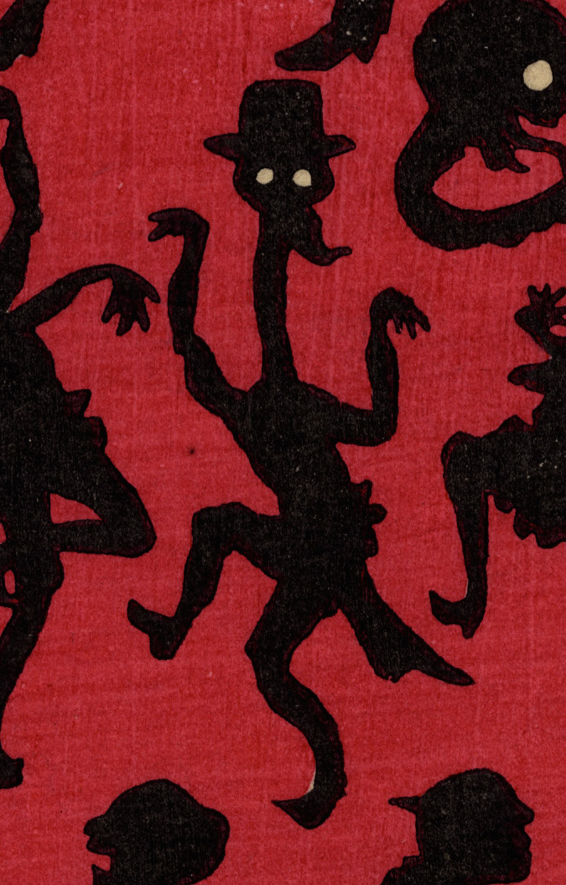

首が長く伸びた化物。シルクハットをかぶり、手足をあげて踊っている。
著作者：小林英次郎／出典：親書誌：U426_nichibunken_0269：しん板あんどううつしゑ；シンパン アンドウ ウツシエ／日付：2014／資源識別子：U426_nichibunken_0269_0003_0000
Copyright (c)2010- International Research Center for Japanese Studies, Kyoto, Japan. All rights reserved.